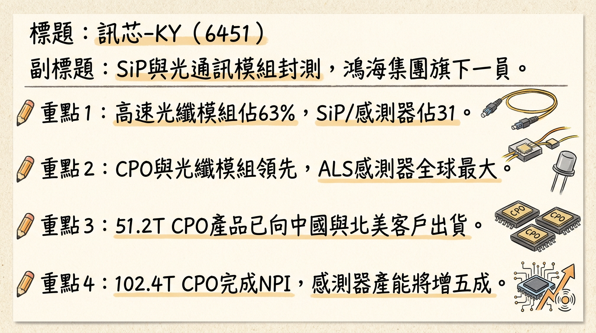
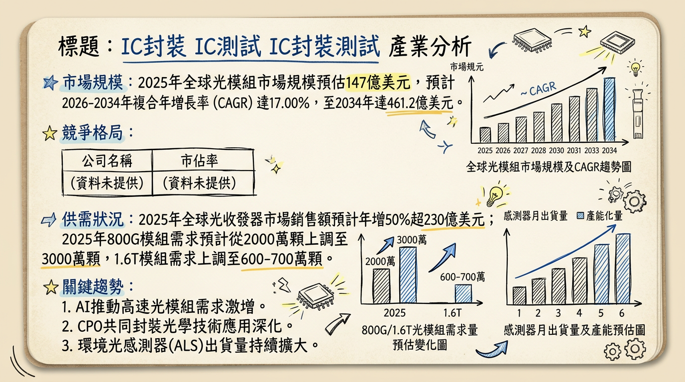
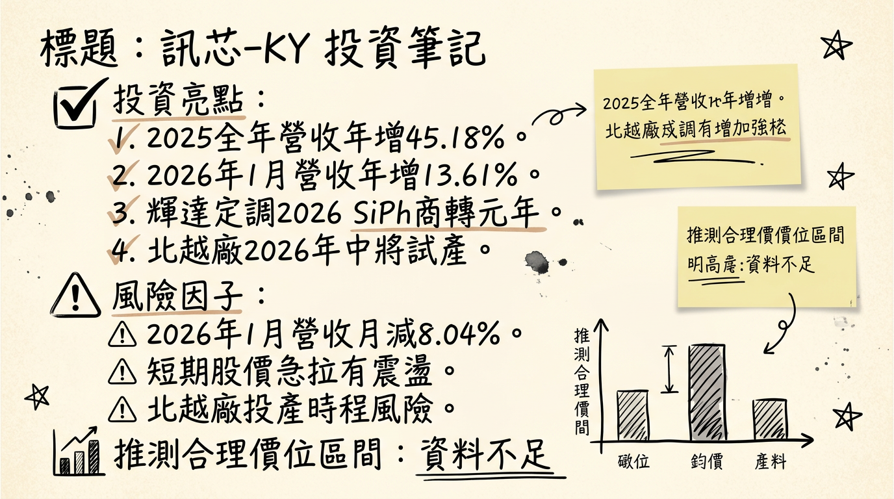

6451 訊芯-KY 深度研究報告
今天日期：2026年03月06日
一句話摘要
訊芯-KY（6451）作為鴻海集團旗下SiP模組封裝廠，受惠於AI資料中心對高速傳輸的龐大需求，憑藉其在AI高速光纖收發模組與共同封裝光學（CPO）領域的領先佈局，以及環境光感測器（ALS）業務的穩固基礎，預期2026年CPO產品將規模放量，帶動營收雙位數成長與獲利結構顯著轉型，是AI光通訊領域的關鍵受惠者。
公司概覽
訊芯-KY主要從事積體電路模組的封裝、測試及銷售業務，是鴻海集團旗下的SiP（系統級封裝）模組封裝廠。其核心產品包括高速光纖收發模組、SiP與感測器，以及電源管理模組。
在產品技術方面，訊芯-KY在高速光纖收發模組與CPO（Co-Packaged Optics）領域已取得領先地位，成功推出51.2T CPO產品並開始向中國與北美客戶小量生產出貨，同時102.4T CPO也已完成新產品導入（NPI）並交付終端客戶測試。目前光纖收發模組出貨仍以400G為大宗，並積極朝800G及1.6T發展。
感測器方面，訊芯-KY在ALS（環境光感測器）領域已做到全球最大，月出貨量高達8,000萬顆，預計2026年產能將提升至1.2億顆，年增五成。公司亦持續強化拓展SAW/BAW濾波器、PA（功率放大器）、RF前端與電源IC業務。
營收結構佔比 (2025年11月21日法說會)
| 產品線 | 營收佔比 |
|---|
| 高速光纖收發模組 | 約 63% |
| SiP與感測器 | 約 31% |
| 電源管理模組 | 約 6% |
核心競爭優勢
CPO及高速光纖模組領先佈局：在AI時代關鍵的CPO技術上取得先發優勢，51.2T產品已小量出貨中國及北美客戶，102.4T完成NPI，顯示公司在光通訊領域的技術實力與前瞻性。
ALS感測器全球龍頭地位：在環境光感測器市場穩居全球最大供應商，月出貨量達8,000萬顆，且預計2026年產能將大幅提升至1.2億顆，提供穩定的營收基礎。
鴻海集團資源整合綜效：作為鴻海集團成員，具備垂直整合優勢，能優先對接AI伺服器高速傳輸訂單，並攜手集團搶攻電動車、充電樁等高成長應用，扮演晶片與系統組裝的「關鍵連接者」。
「中國+1」生產基地策略：製造基地佈局於中國中山及越南，形成穩固供應鏈，可同時滿足中國與歐美日客戶對非中國產線的需求，降低地緣政治風險。
多元產品線與先進封裝技術：除了光通訊，SiP與電源管理模組也提供多元成長動能，特別是SiP在小型化、高集成度應用中具備關鍵地位。
財務分析
月營收趨勢
| 月份 | 金額 (億元) | 月增率 (MoM) | 年增率 (YoY) |
|---|
| 2026/01 | 6.16 | -8.04% | +13.61% |
| 2025/12 | 6.70 | -1.00% | -5.93% |
| 2025/11 | 6.77 | -6.40% | +56.14% |
| 2025/10 | 7.23 | +41.14% | +31.76% |
| 2025/09 | 5.12 | +10.91% | +8.98% |
| 2025/08 | 4.62 | -36.16% | +1.99% |
訊芯-KY在2025年下半年營收表現強勁，尤其10月和11月年增率分別達到+31.76%和+56.14%，顯示出明確的成長動能。儘管2025年12月和2026年1月營收出現月減，但2026年1月年增率仍有13.61%，整體成長趨勢在持續。2025年累計營收為75.32億元，較前一年同期累計營收大幅增加45.18%，顯示公司營運規模顯著擴張。
季度數據
* 季營收: 16.97億元
* 毛利率: 23.88%
* 營業利益率: 7.61%
* EPS: 1.0元
- 2025年第四季 (2025Q4): 董事會預計於2026年03月11日提報財報，目前尚未公布最新數據。
年度趨勢
* EPS: 0.4元
* 全年營收: 75.32億元 (較前一年同期累計增加45.18%)
* EPS (截至2025年第三季累計): -0.64元
- 2025年預估： 萬寶週刊預估2025年EPS有望上看4元。
分析： 訊芯-KY在2025年Q3營運顯著改善，毛利率和營業利益率回升，並轉虧為盈，單季EPS達到1.0元。儘管2025年前三季累計EPS仍為負值，但第四季營收表現相對穩健，市場對其2025年全年獲利（萬寶週刊預估上看4元）和2026年成長前景抱持高度期待，反映產品組合優化和CPO業務帶來的潛在爆發力。
法說會重點
最近一次法說會日期：2025年11月21日
管理層對各產品線的具體出貨量/訂單能見度說明：
* 目前出貨仍以400G為大宗，並逐步朝800G、1.6T發展。
* 預期2026年隨著AI伺服器對頻寬需求快速倍增，主流規格將切換至800G。
* 51.2T CPO產品已進入小量生產，並開始向中國與北美客戶出貨。
* 102.4T CPO已完成NPI（新產品導入）並交給終端客戶測試。
* ALS感測器已做到全球最大，月出貨量高達8,000萬顆。
* 預計2026年月產能將提升至1.2億顆，年增五成。
* 持續拓展SAW/BAW濾波器、PA、RF前端與電源IC業務。
* 看好車用半導體需求強勁，將傳統TSOP、QFN、QFP等封裝導入車規材料與製程，並攜手母公司鴻海集團搶攻電動車、充電樁等高成長應用。
產能利用率、資本支出金額：
- 訊芯-KY在中國中山及越南布建量產能力，形成穩固的「中國+1」布局，可同時供應中國與歐美日客戶。
- 越南河內廠供應100G/200G光纖收發模組，光州廠供應400G/800G光纖收發模組。
- 云中廠、光州廠則用於投入SiP封裝，目前正在建置產線中，預計2026年第一季導入量產。
- 訊芯香港於2024年底決議，對訊芯越南增資19億元新臺幣，並規畫於北江省擴充晶片產能，該工程預計於2026年中試產。
管理層給出的下季/下半年 guidance：
- 總經理徐文一表示，受惠AI帶動光纖模組以及SiP業務成長，看好2026年營收有望年增雙位數。
券商觀點
目前未找到 2024 年以後至少 3 家券商的最新目標價及評等資料。以下為現有資訊整理，其中券商報告為過時資訊，僅供參考，並包含市場對其EPS的預估。
| 券商名稱 | 目標價 (元) | 評等 | 日期 | 2025年EPS預估 | 2026年EPS預估 |
|---|
| 元富證券投顧 | 90 | 中立 | 2022年11月21日 | N/A | N/A |
| 市場預估 | N/A | N/A | N/A | 萬寶週刊預估4元 | 具爆發性成長 |
由於缺乏近期券商報告，市場對訊芯-KY的股價表現主要來自對AI、CPO等題材的強烈預期。萬寶週刊對2025年EPS有望上看4元的預估，以及市場對2026年獲利爆發性成長的期待，是目前推動股價的主要因素。
財報深度分析
利潤率趨勢
| 季度 | 毛利率 (%) | 營業利益率 (%) | 稅後淨利率 (%) |
|---|
| 2025 Q3 | 23.88 | 7.61 | 8.05 |
| 2025 Q2 | 14.53 | -1.16 | -3.79 |
| 2025 Q1 | 6.20 | -6.63 | -6.22 |
| 22024 Q4 | 11.02 | -3.67 | 2.58 |
| 2024 Q3 | 7.98 | -9.50 | -0.38 |
| 2024 Q2 | 20.19 | 2.20 | 7.66 |
| 2024 Q1 | 15.64 | -6.67 | -9.95 |
| 2023 Q4 | 26.27 | 4.71 | 14.01 |
訊芯-KY的利潤率在2024年和2025年上半年呈現波動，毛利率一度下滑至2025年Q1的6.20%，並出現營業虧損。然而，在2025年Q3，隨著產品結構調整和高毛利的AI光纖模組（CPO）業務逐步貢獻，毛利率顯著回升至23.88%，營業利益率和稅後淨利率也恢復正值。公司積極進行產能擴充和產品結構調整，以因應AI伺服器對傳輸速度的需求，佈局CPO領域，預計2026年CPO商轉將進一步提升整體獲利能力。
存貨與營運週轉
| 季度 | 存貨週轉天數 (天) | 應收帳款週轉天數 (天) |
|---|
| 2025 Q3 | 72.96 | 66.66 |
| 2025 Q2 | 51.53 | 56.73 |
| 2025 Q1 | 33.80 | 47.01 |
| 2024 Q4 | 37.19 | 52.67 |
訊芯-KY的存貨週轉天數和應收帳款週轉天數從2024年Q4到2025年Q3呈現上升趨勢，導致營運週轉天數相應增加。這可能反映了為因應未來AI和CPO訂單的增長而進行的策略性備料，以及客戶驗證或拉貨時程的影響。目前搜尋結果未明確指出訊芯-KY存貨有異常堆積或備料現象，但週轉天數的增加值得持續關注。
資本支出與產能
- 近3年資本支出金額與趨勢： 未找到2024-2026年具體的資本支出金額。
- 未來資本支出計畫與預計新增產能：
* 訊芯-KY已在越南北江設廠，投入光纖收發模組前段生產，以應對美中科技戰的影響。
* 訊芯香港於2024年底決議，對訊芯越南增資19億元新臺幣，用於加速擴大越南廠產能，規畫於北江省擴充晶片產能，該工程預計於2026年中試產。
* 云中廠、光州廠的SiP封裝產線正在建置中，預計2026年第一季導入量產。
股權異動
股利政策
- 2025年股利 (發放2024年度盈餘)： 現金股利0.36元，股票股利0.00元。除息日2025年7月25日，發放日2025年8月26日。
- 2024年股利 (發放2023年度盈餘)： 現金股利2.46元，股票股利0.00元。除息日2024年7月25日，發放日2024年8月23日。
可轉換公司債 (CB)
- 訊芯-KY已發行「訊芯二KY」無擔保轉換公司債，債券代碼為64512。
- 發行總面額：新台幣25億元。
- 發行日：2025年2月27日。
- 到期日：2028年2月27日。
- 發行期限：3年。
- 票面利率：0%。
- 最新轉換價：153.8元 (發行時轉換價為175.2元)。
其他股權異動
- 董監事/大股東申報轉讓紀錄： 目前搜尋結果未找到2024-2026年近期董監事/大股東申報轉讓的具體紀錄。
- 庫藏股買回紀錄： 未找到2024-2026年最新的庫藏股買回紀錄。2020年曾公告買回，目的為激勵員工。
- 現金增資或減資計畫： 目前搜尋結果未找到2024-2026年現金增資或減資計畫的相關資訊。
產業分析
產業市場規模與CAGR成長率
| 產品/技術 | 市場規模與CAGR (主要來源，多重預測並列) |
|---|
| 光纖收發模組 | 2025年全球光模組市場預估147億美元。預計從2026年的171.5億美元成長至2034年的461.2億美元，預測期內CAGR達17.00%。另有預測2026年全球光收發模組市場將達近120億美元。 |
| 共同封裝光學 (CPO) | 摩根士丹利預估CPO市場規模將從2023年的800萬美元，到2030年暴增至93億美元，七年CAGR高達172%。產業研究機構預計2023年全球CPO連接埠僅5萬個，2026年將突破450萬個。市場規模從2024年的4,600萬美元跳漲到2026年的35.1億美元。ResearchAndMarkets.com預計到2036年，CPO市場規模將超過200億美元，2026-2031 CAGR超過35%。 |
| SiP 系統級封裝 | 截至2025年末，全球SiP市場規模已突破200億美元，預計2026-2030年將保持超過15%的CAGR。另有報告預計SiP市場規模將從2020年的140億元攀升至2026年的190億元以上。先進半導體封裝市場 (含SiP) 預計2025年230.3億美元，2035年達到550.2億美元，CAGR為9.1%。 |
| 環境光感測器 (ALS) | 2025年環境光感測器市場規模預計為117.7億美元，2026年為132.3億美元。另有報告指出，2025年市場達33.1億美元，預計到2026年將達36.1億美元，並在2026-2035年CAGR超過10.1%。 |
| 功率放大器 (PA) | 2025年全球PA市場規模401.5億美元，預計從2026年的458.5億美元成長到2034年的1326.5億美元，預測期內CAGR為14.20%。另有預測，PA市場預計2025年達282億美元，並以7%的CAGR成長，到2030年達395.5億美元。 |
| SAW/BAW濾波器 | 未找到 2025-2026 年的最新市場規模和CAGR數據。 |
光通訊模組、SiP封裝和感測器產業的平均毛利率水準因產品類別、技術複雜度、市場競爭和公司策略而異。目前未找到2025-2026年各細分產業的最新平均毛利率數據。然而，隨著CPO導入交換器，整體光通訊產品的平均單價（ASP）可望出現倍數提升，這對毛利率提升將是利多。
競爭格局
由於各細分領域市場資料來源和統計方式可能不同，且市場競爭動態變化快速，難以精確列出每個產品線的全球前五大公司及其精確市佔率的最新數據（2024年以後）。下表列出各領域的主要參與者與相關台灣同業作為參考。
| 產品/技術 | 主要全球參與者 | 相關台灣同業 (參考) |
|---|
| 高速光纖收發模組/CPO | Broadcom, Cisco, Coherent Corp, Lumentum, Intel, Marvell, NVIDIA (透過合作夥伴) | 聯鈞(3450), 上詮(3363), 華星光(4979), 波若威(3163), 眾達-KY(4977), 聯亞(3081), 全新(2455) |
| SiP 系統級封裝 | ASE Technology Holding (日月光投控), Amkor Technology, JCET, SPIL, Apple (in-house) | 日月光投控(3711) |
| 感測器 (ALS) | AMS OSRAM, Broadcom, STMicroelectronics, Everlight, Lite-On | (訊芯-KY 在此領域為全球最大供應商) |
| 電源管理模組 | Texas Instruments, Infineon, NXP, STMicroelectronics | (訊芯-KY 與鴻海集團合作，搶攻電動車應用) |
產業趨勢
矽光子（Silicon Photonics）與共同封裝光學（CPO）技術的崛起：
* 具體影響： 隨著AI運算進入「百萬GPU」超大規模時代，傳統銅線傳輸與可插拔光模組面臨功耗、訊號完整性、頻寬密度瓶頸。CPO技術將光學引擎與交換晶片封裝，可使電訊號傳輸距離縮短70%以上，功耗降低25-30%，頻寬密度大幅提升。輝達已將2026年定調為矽光子商轉元年，市場預期AI光學互連市場將快速成長，將推動整體光通訊產品的平均單價（ASP）倍數提升。
高速光纖收發模組（800G/1.6T）的需求激增：
* 具體影響： 生成式AI和HPC的爆發式成長，使數據中心對高頻寬互連需求暴增。2025年800G模組將成為主流，出貨量預估大增60%；1.6T產品預計於2026年後逐漸放量。這為光收發模組供應商帶來巨大市場機遇。
先進封裝技術的持續演進（如SiP、2.5D/3D封裝）：
* 具體影響： 電子元件微小化需求日益增長，SiP技術能在更小體積內整合多個晶片及不同元件，提供更優化的性能和設計靈活性。AI、HPC、汽車和AIPC等多種趨勢推動先進封裝市場在2023-2029年間以11%的年複合成長率（CAGR）成長。
對訊芯-KY 而言的具體機會和威脅
*
CPO領域領先地位： 已有51.2T產品出貨與102.4T NPI，在CPO大規模商轉的2026年佔據有利位置。
* 高速光纖模組需求增長： 直接受益於400G、800G及1.6T光纖收發模組市場的爆發性成長。
* 感測器市場穩固地位： ALS全球最大供應商，產能擴增確保營收與獲利持續增長。
* SiP技術多元應用： 在智能手機、HPC、汽車電子和物聯網等領域提供成長機會。
* 鴻海集團資源： 優先對接集團內AI伺服器訂單，拓展車用市場。
*
技術競爭加劇： CPO和矽光子是新興領域，競爭激烈，需持續投入研發。
* 客戶集中風險： 過度依賴少數大型客戶可能導致營運波動。
* 市場價格壓力： 隨著量產規模擴大和技術成熟，可能面臨價格競爭，影響毛利率。
* 供應鏈不確定性： 關鍵材料或設備短缺，野村估算2026年光晶片供應仍將落後需求5%-15%，可能影響產能。
相關投資題材的具體連結
- AI (人工智慧) 與HPC (高效能運算)： AI運算的爆發式成長是推動高速光通訊和CPO技術最主要的驅動力。訊芯-KY在CPO和高速光纖收發模組的佈局，使其成為AI產業發展的直接受惠者。NVIDIA和博通等巨頭加速CPO商用進程，訊芯-KY是重要夥伴。
- 電動車： 訊芯-KY的感測器和電源管理模組產品線，有望受惠於電動車產業。電動車對環境光感測器、PA和電源管理IC的需求將持續增長，尤其結合鴻海集團資源，有利搶攻電動車市場。
近期催化劑
- 2026年03月06日： 訊芯-KY盤中股價急拉，漲幅3.52%，報191.0元。
- 2026年02月23日： 訊芯-KY強攻漲停，市場對CPO與AI題材高度期待，其CPO產品已出貨中國及美系AI資料中心。
- 2026年02月09日： 公布2026年1月合併營收為新台幣6.16億元，較2025年12月減少8.0%，但較去年同期（2025年1月）成長13.6%。
- 2026年02月03日： 法人普遍看好訊芯-KY在技術領先與大規模生產優勢下，2026年將是其業績從驗證轉向實質營收貢獻的關鍵年。輝達將2026年定調為矽光子技術商轉元年，訊芯股價跳空鎖定漲停價位189.5元。
- 2026年01月28日： 訊芯-KY將持續擴大北越廠規模，該工程預計於2026年中試產，以強化對歐美與日本客戶的供應能力。
- 2026年01月10日： 公布2025年12月營收為新台幣6.70億元，較前一月減少1%，較去年同期減少5.93%。2025年累計營收為75.32億元，較前一年同期累計營收增加45.18%。
- 2025年11月21日 法說會： 總經理徐文一表示，受惠AI帶動光纖模組以及SiP業務成長，看好2026年營收有望年增雙位數。並提及公司在高速光纖收發模組與CPO領域已取得領先地位，51.2T CPO產品已小量生產，並開始向中國與北美客戶出貨，102.4T CPO也完成NPI並交給終端客戶測試。
- 2024年12月30日： 訊芯-KY子公司訊芯香港將間接增資訊芯越南19億元新台幣，加速擴大越南廠CPO產能，以因應美國客戶需求。
⭐ 成長動能時間軸
* 云中廠、光州廠的SiP封裝產線預計導入量產。
* 訊芯-KY北越新廠預計試產，以強化對歐美與日本客戶的供應能力。
* 1.6T CPO高密度光纖陣列（FAU）在完成系統廠驗證後，預計正式啟動大規模出貨。
*
整體營收： 公司管理層預計營收將年增雙位數。
* 高速光纖收發模組： 隨著AI伺服器對頻寬需求倍增，主流規格將切換至800G，1.6T產品逐步放量。
* CPO模組封裝： 51.2T CPO產品持續向中國與北美客戶出貨，102.4T CPO完成NPI後預期將貢獻營收。輝達將2026年定調為矽光子商轉元年，推動CPO全面放量。
* ALS感測器： 月產能將從8,000萬顆提升至1.2億顆，年增5成。
* 電源模組業務： 受益於車用半導體市場成長（預期2029年前CAGR達11%，市場規模近970億美元），攜手鴻海搶攻電動車、充電樁應用。
* 訊芯香港增資訊芯越南19億元新台幣，加速越南廠CPO產能擴建，並在越南光州廠附近自建第四座廠區，以因應美國客戶對CPO模組的長期需求。
2026 展望
成長動能：
CPO商轉爆發與高速光通訊升級： 2026年是矽光子與CPO技術大規模商轉的關鍵一年。隨著AI資料中心對800G及1.6T光纖模組的需求呈現爆炸性增長，訊芯-KY的51.2T/102.4T CPO產品出貨將顯著放量，成為最主要的營收與獲利成長引擎。CPO的高單價將顯著優化公司毛利率結構。
越南產能持續擴張： 透過增資19億元新臺幣加速越南廠CPO與SiP產能擴充，並於2026年中試產北越新廠，確保非中國產線供應能力，抓住歐美及日本客戶需求。
SiP與感測器穩健成長： ALS感測器月產能提升5成至1.2億顆，加上SiP封裝產線的導入量產，為公司提供穩定的基本盤營收貢獻。
鴻海集團綜效強化市場地位： 作為鴻海集團AI伺服器供應鏈的關鍵一環，訊芯-KY能優先對接集團內部的AI伺服器高速傳輸訂單，並在電動車等新興應用上與集團協同發展。
風險：
估值風險： 市場對訊芯-KY的股價已「領先反映2026年EPS」，目前估值相對偏高。若未來CPO實際出貨量、客戶導入時程或毛利率不及市場預期，高估值將面臨調整壓力。
營運未達預期： 若產能擴充速度不如預期、主要客戶訂單波動、或技術轉換期導致產品良率不佳，可能影響2026年營收和獲利目標的實現。
產業競爭與價格壓力： 高速光通訊與先進封裝領域競爭激烈，可能導致產品報價壓力，進而影響毛利率表現。
供應鏈不確定性： 儘管積極佈局「中國+1」，但關鍵光晶片供應仍可能面臨瓶頸（野村預估2026年光晶片供應仍落後需求5%-15%），影響CPO產品的生產與交付。
技術規格演進速度： 光通訊產業技術迭代快速，公司需持續投入研發以維持技術領先，若未能跟上腳步，恐面臨被淘汰的風險。
投資結論
訊芯-KY (6451) 在AI浪潮下，正處於關鍵的戰略轉型期，其在CPO和高速光通訊領域的領先佈局，有望在2026年實現業績的爆發性成長。
AI光通訊核心受惠者，轉型期潛力巨大： 訊芯-KY在51.2T CPO產品的小量出貨及102.4T CPO的NPI進度，使其在2026年矽光子商轉元年佔據有利位置。隨著AI資料中心對800G/1.6T高速光通訊需求激增，「光進銅退」趨勢明確，CPO將是AI運算的關鍵瓶頸突破點，為公司帶來顯著成長動能。
產品組合優化，毛利率改善可期： 隨著高毛利的CPO產品放量，以及產品結構從傳統封裝轉向先進光通訊模組，預期公司的毛利率和獲利能力將有顯著提升，扭轉近年來利潤率波動的局面。
穩固的基本盤與產能擴充確保長期動能： 訊芯-KY在全球ALS感測器市場的龍頭地位，以及SiP業務的多元應用，提供了穩定的營收基礎。同時，19億元新臺幣增資越南廠並預計於2026年中試產北越新廠，將大幅擴充CPO產能，滿足全球客戶對非中國產線的需求，為長期成長奠定基礎。
鴻海集團垂直整合綜效： 作為鴻海集團成員，在AI伺服器等領域具備優先合作優勢，能夠更有效地將產品導入終端應用，並擴展至電動車、充電樁等高成長市場，形成集團內部協同效應。
估值已高，需密切關注執行力： 市場已對訊芯-KY的未來成長抱持高度預期，股價已提前反應部分利多。投資人需密切關注CPO產品的實際出貨量、客戶導入進度、以及毛利率改善的實際情況，確保公司執行力能兌現市場預期。
綜合考量2026年AI光通訊市場的爆發性成長潛力、訊芯-KY在CPO領域的領先地位及其產能佈局，預期其2026年獲利將有顯著提升。雖然2025年累計EPS仍為負，但市場對其2026年獲利爆發性成長抱持高度預期，甚至有分析指出2026年第一季EPS可達2.3元。假設2026年全年EPS有望達到新台幣 8元至10元，並給予高成長科技股相對合理的本益比區間28-35倍，建議目標價區間為新台幣 224元 至 350元。
本報告由 AI 自動產生，資料來源為公開網路資訊，僅供參考，不構成投資建議。產生時間：2026-03-06 12:56
📊 資訊卡


